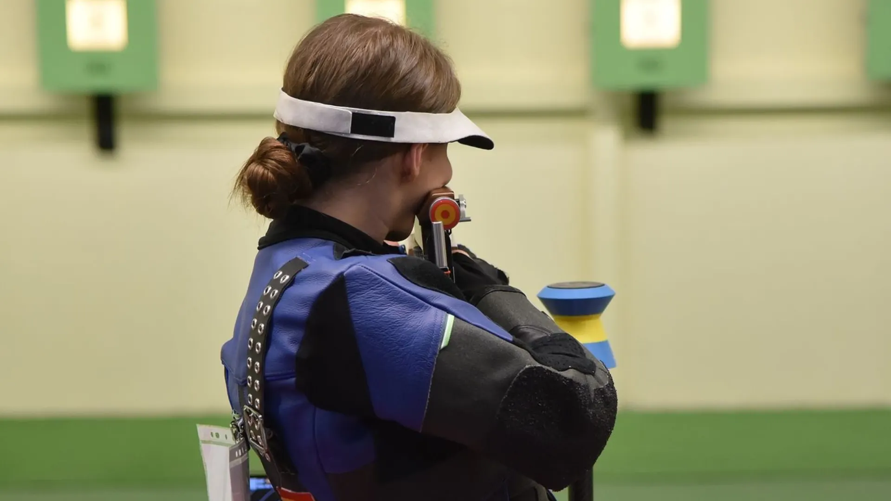
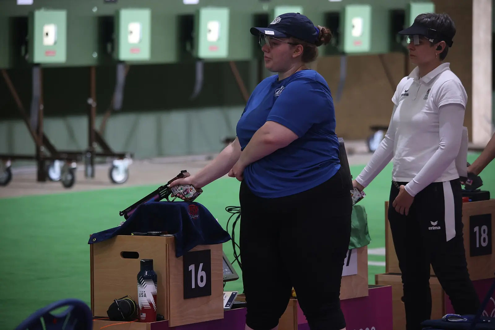
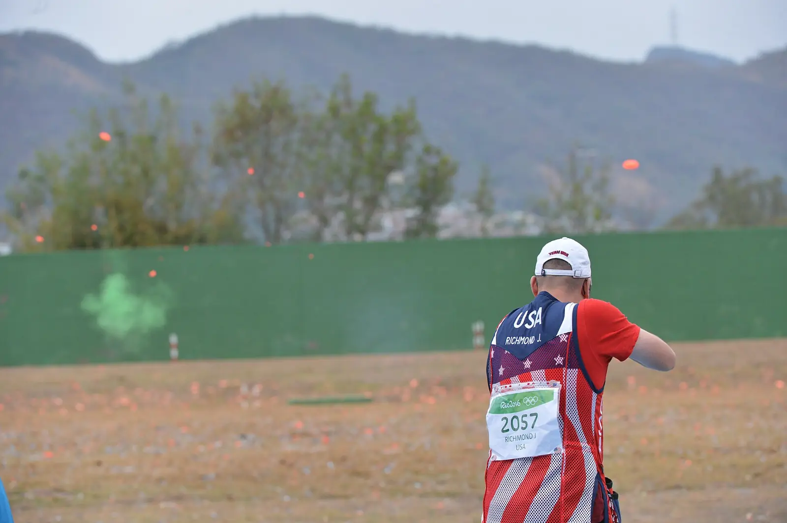
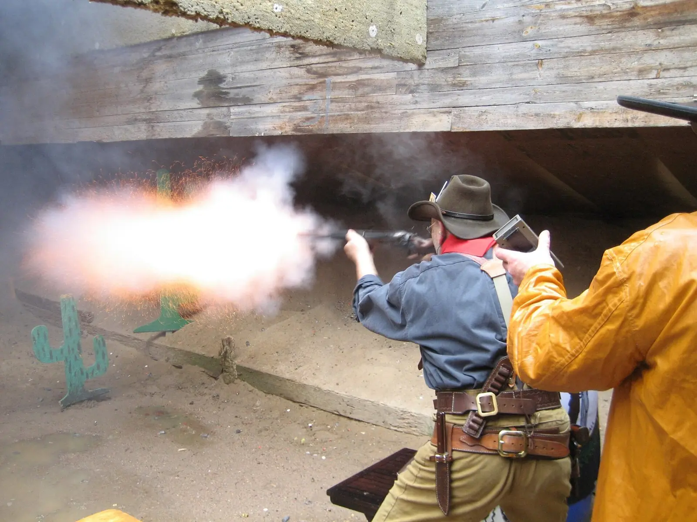
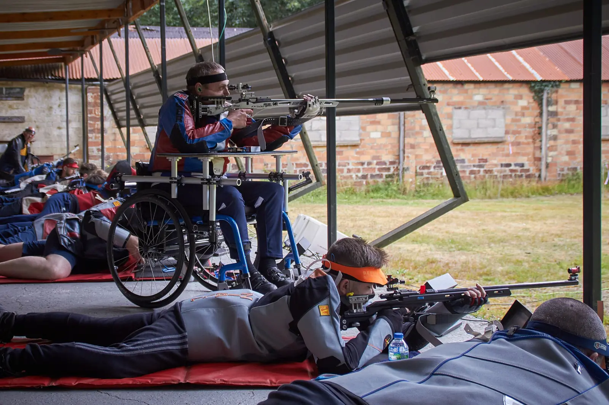
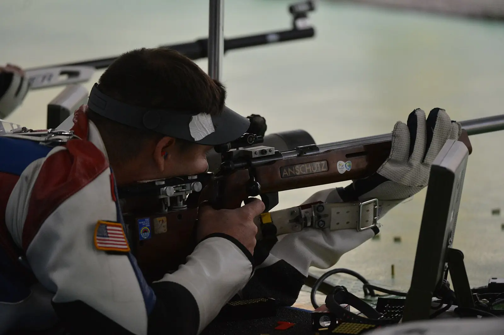
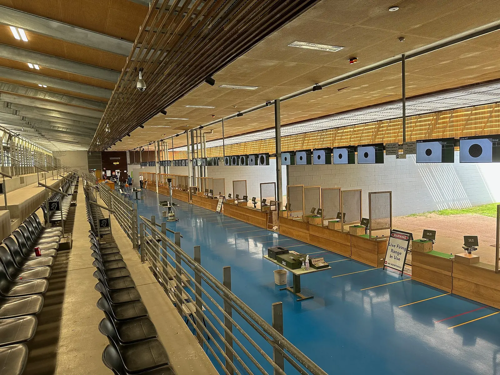

24Oct
CTO. Andalucía F-Class 50+100 m · Combinada
Las Gabias (Granada)

Federación Andaluza de Tiro Olímpico
El tiro olímpico combina habilidad, concentración y precisión. Competición, escuela y clubes en las ocho provincias andaluzas. ¿Te apuntas?
Todas las competiciones RFEDETO y FATO, filtrables y exportables.
Protocolo Allianz-Beiman, teléfono 24 h y parte online.
72 clubes con contacto directo, por provincia.
Reglamentos, ayudas 2026 y rankings por especialidad.
Agenda de competición
Las Gabias (Granada)
El Puerto de Santa María (Cádiz)
Jaén
Seis disciplinas, un mismo gesto
Del silencio de la galería de 10 metros al estruendo del foso. Elige la modalidad que encaja contigo y consulta su normativa y rankings.

Blanco fijo a distancias de 10 a 300 metros, con pistola y carabina de pequeño y gran calibre.
Descubrir
Platos de arcilla lanzados a más de 100 km/h desde distintos ángulos: foso, skeet y sus variantes.
DescubrirModalidad dinámica: desplazamiento, cambios de posición y blancos múltiples contra el reloj.
Descubrir
Réplicas de armas antiguas y pólvora negra: la tradición convertida en competición.
Descubrir
Precisión extrema a larga distancia con rifles especializados y equipamiento avanzado.
Descubrir
Larga distancia en posición tendido, con rifles de alta potencia y visores telescópicos.
DescubrirLa federación en cifras
Cada delegación provincial acompaña a sus clubes en el día a día: licencias, competiciones locales y formación. Pulsa una provincia para ver sus clubes o consulta la agenda de cada delegación.

Seguro de accidentes deportivos · Allianz-Beiman
El parte debe comunicarse en un plazo máximo de 7 días
TELÉFONO DE ATENCIÓN 24 H
677 808 817Actualidad
Oro internacional para la tiradora de la delegación granadina.
La jiennense de 18 años, oro en carabina aire de pie (SH-VIS).
El granadino Melitón Antonio Briñas Mora logra el oro y el récord mundial.
Únete
Cursos de perfeccionamiento, inscripciones y trámites online, seguro deportivo y acceso a todo el calendario oficial.
Busca en el directorio el club más cercano y la especialidad que te interesa.
Tu club o tu delegación provincial te guían en el alta y la documentación.
Escuela, tecnificación y competiciones locales, autonómicas y nacionales.